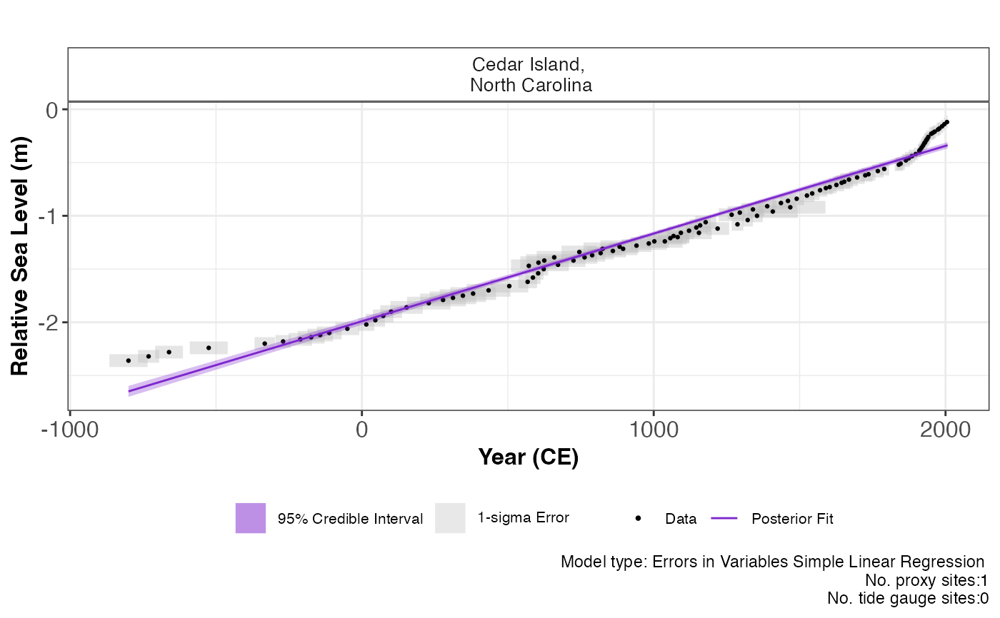

reslr_mcmc function.plot.reslr_output.RdFor the EIV simple linear regression and the Change point models the model fit plots are created, preferably for 1 proxy site. For the EIV IGP and the NI spline in time the plots of the model fits and the derivative of the model fit are produced for 1 proxy site, as running these models with more than 1 site or with tide gauge data is not recommended. For the NI spline in space time, the plots of the model fits and the derivatives of the model fits are produced for any amount of proxy sites. For the NI GAM decomposition, the plots of the model fits and the derivatives of the model fits are produced for any amount of sites including tide gauges and proxy sites. It is important to note that tide gauge data is strongly recommended for this model. Also, the ni_gam_decomp model will produce plots for each individual component,i.e. the regional component and its rate of change, the linear local component, the non-linear local component and its rate of change. If tide gauges are used in the model, the user has the ability plot the output with or without the inclusion of the tide gauges.
An object of class reslr_output and model_type created via reslr_mcmc
Plotting the tide gauge data as well as proxy data
The user can select the type of output plot they require from the following: "rate_plot","model_fit_plot","regional_plot","regional_rate_plot","linear_local_plot","non_linear_local_plot","non_linear_local_rate_plot","nigam_component_plot"
Plotting an informed caption with the number of tide gauges and proxy sites.
Not used
Plot of model fit and the rate of change depending on the statistical model in question.
data <- NAACproxydata %>% dplyr::filter(Site == "Cedar Island")
x <- reslr_load(data = data)
#>
#> The inputed age value is units of Common Era.
#> No decadally averaged Tide gauge data or linear_rate included.
#> Note: Both are required for the ni_gam_decomp model
jags_output <- reslr_mcmc(x, model_type = "eiv_slr_t")
#> module glm loaded
#> Compiling model graph
#> Resolving undeclared variables
#> Allocating nodes
#> Graph information:
#> Observed stochastic nodes: 208
#> Unobserved stochastic nodes: 107
#> Total graph size: 1003
#>
#> Initializing model
#>
#> JAGS model run finished for the EIV Simple Linear Regression
plot(x = jags_output)
#> Plotted EIV Simple linear regression.
#> Print plot of the model fit
